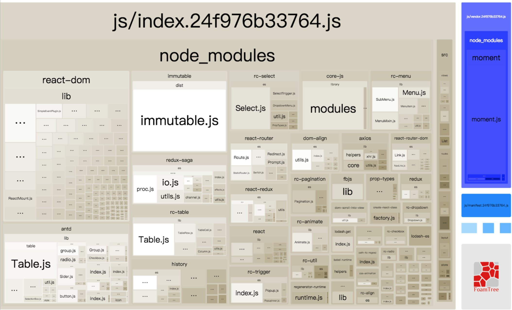

第一部分：前端工程化简介
前端工程化
在现代前端开发过程中，随着开发工作的复杂度日趋增加，开发者对自动化化构建的要求越来越高，从传统的软件IDE借鉴思路，将代码的模块管理，引用分析，资源的打包处理，自动输出，压缩合并等进行统一处理，打通研发链路的各环节，提升开发效率
前端自动化构建
- 读取入口文件
- 分析模块引用
- 按照引用加载模块
- 模块文件编译处理
- 文件资源合并
- 文件优化处理
- 写入生成目录
- 持续集成
自动化构建流程
- 模块引入分析(AST)
- 模块化规范支持
- CSS编译，自动合并图片
- HTML,JS,CSS资源压缩与优化
- 资源路径替换
- 开发和生产环境切换
- 异步文件打包方案
- 构建发布
自动化工具设计
小结：
主流构建工具层出不穷，但是原理和流程基本相同，所以了解基本的构建思路，对学习和上手工具是非常用用的。
第二部分：Webpack基本介绍
"一切都是资源"

https://webpack.js.org/
为什么选择webpack
1.资源管理功能强大，兼容AMD,CMD,commonJS等多种标准
2.串联式模块加载器以及插件机制，预编译(sass/less/图片转base64等)
3.可以基于配置或者智能分析打包成多个文件，实现公共模块或者按需加载
4.开发时在内存中完成打包，支持热更新，能实时预览修改效果
5.支持 ES6、JSX、LESS，TS 等多种语法
6.支持静态文件名 hash 化，支持 hash 后的文件名及路径注入到后端模版文件
7.任何用到的资源都可作为模块被import(js/css/图片/字体/html...)
8.支持静态文件自动合并，能够很好的处理公共库和组件文件的合并
9.支持环境变量，区分开发环境和生产环境
10.强大方便的 dev-tool 支持，可以定制生成合适的sourcemap进行调试
11.通过shim特性对各种第三方库进行支持
12.社区活跃度高，业内使用广泛，目前三大前端框架都采用webpack做构建
13.自定义程度高，可以灵活打造适合自己的工程环境
使用过Wepback的吐槽
"理想很丰满，现实很骨感"
打包太慢 配置繁琐 API太多 体积巨大 难调试 日志多
Webpack应该怎么学？
"二八原则"：熟练掌握最核心的API，多查阅，多思考，多总结，不做代码搬运工
webpack中最核心的几个概念(Core Concepts)
/ Core Concepts /
entry: 打包文件的入口点，支持字符串(单文件)，数组(多文件)和对象(多入口)
chunk：被entry所依赖的额外的代码块，同样可以包含一个或者多个文件，所有的资源都以模块的形式存在
output: 构建好的资源文件如何写入到指定目录，只能有一个出口 (path，publicPath，filenname)
loaders: 加载器，用于对特定的源代码和模块进行转换，支持各种语言和预处理器编写模块(jsx=>js, less=>css, img=>base64等)
plugins: 插件，服务于编译期间，是一个具有apply属性的JavaScript对象，其apply属性会被webpack compiler调用，并且compiler对象可在整个编译生命周期访问
modules: webpack中放置loaders的地方，可集中在rules数组中进行管理
resolve：设置对资源的寻址和解析规则，可通过alias和extensions来进行解析规则定制
externals：从输出的 bundle 中排除依赖，多在 library 开发或者加载中使用
manifest：文件清单,当编译器(compiler)开始执行、解析和映射应用程序时，它会保留所有模块的详细要点,使用 manifest 中的数据，runtime 将能够查询模块标识符，检索出背后对应的模块。
https://webpack.js.org/concepts/
webpack-dev-server
webpack本身的定位是一个资源管理和打包构建工作，本身的强大之处在于对各种静态资源的依赖分析和预编译，在实际开发中官方还推荐了一个快速读取webpack配置的server环境webpack-dev-server，一个适用于开发环境的，基于express + webpack-dev-middleware实现的，支持实时更新，内存构建资源的开发服务器，通过简单的配置即可满足webpack开发环境中的一系列需求，支持HMR热更新
entry 要点概览
module.exports = {
cache: true,
context: path.resolve(__dirname, './src'), // 指定构建目录
entry: {
index: [
'react-hot-loader/patch',
// 开启 React 代码的模块热替换(HMR)
`webpack-dev-server/client?http://${webpackServerConfig.host}:${webpackServerConfig.port}`,
// 为 webpack-dev-server 的环境打包代码
// 然后连接到指定服务器域名与端口
'webpack/hot/only-dev-server',
// 为热替换(HMR)打包好代码
// only- 意味着只有成功更新运行代码才会执行热替换(HMR)
'./index.js',
// app 的入口文件
],
vendor: ['react', 'react-dom']
}
}
output 要点概览
module.exports = {
output: {
filename: 'js/[name].[hash:12].js', // 输出的打包文件名
path: path.join(__dirname, 'dist'), // 项目输出路径
publicPath: 'http://127.0.0.1:3000/', // 需要注入给页面调用的资源路径
chunkFilename: 'js/[name].[chunkhash].js' // 做代码分割后定制的chunk文件名
}
}
loader 要点概览
module.exports = {
module: {
rules: [
{
test: /\.(js|jsx)$/,
use: [
'babel-loader?cacheDirectory'
],
exclude: /^node_modules$/,
},
{
test: /\.css$/,
use: [
'style-loader',
'css-loader',
],
exclude: /^node_modules$/,
}
]
}
}
{
test: /\.less$/,
use: [
'style-loader',
'css-loader',
'less-loader',
],
include: /node_modules/ // hack for antd
},
{
test: /\.less$/,
use: [
'style-loader',
'css-loader?modules&localIdentName=[path][name]---[local]---[hash:base64:5]',
'less-loader',
],
exclude: /node_modules/
}
loader 要点概览 II
{
test: /favicon\.png$/,
use: [{
loader: 'file-loader', // 使用file-loader
options: {
name: '[name].[ext]?[hash]',
}
}],
exclude: /^node_modules$/,
},
{
test: /\.(png|jpg|jpeg|gif|eot|ttf|woff|woff2|svg|svgz)(\?.+)?$/,
exclude: /favicon\.png$/,
use: [{
loader: 'url-loader', // 处理静态资源
options: {
limit: 10000, //小于10kb作为base64内嵌
},
}],
}
resolve 要点概览
resolve: {
extensions: ['.jsx', '.js', '.less', '.json'], // 省略文件扩展名，指定寻址文件匹配名
alias: {
"actions": path.resolve(__dirname, "src/actions"),
"constant": path.resolve(__dirname, "src/constant"),
"static": path.resolve(__dirname, "src/static"),
"routes": path.resolve(__dirname, "src/routes"),
"api": path.resolve(__dirname, "src/api"), // 简化寻址路径
"utils": path.resolve(__dirname, "src/utils"),
"store": path.resolve(__dirname, "src/store"),
'react': __PREACT__ ? 'preact-compat/dist/preact-compat': 'react',
'react-dom': __PREACT__ ? 'preact-compat/dist/preact-compat' : 'react-dom',
'create-react-class': __PREACT__? 'preact-compat/lib/create-react-class' : 'create-react-class'
}
}
plugins 要点概览
plugins: [
// 添加系统全局变量
new webpack.DefinePlugin({ // 编译成生产版本
'process.env': {
NODE_ENV: JSON.stringify('production'),
},
}),
new webpack.optimize.UglifyJsPlugin({
output: { comments: false, // 压缩时去掉js所有注释，包括copyright信息 },
compress: { warnings: false },
}),
new webpack.optimize.CommonsChunkPlugin({ names: ['vendor', 'manifest'] }),
new webpack.HotModuleReplacementPlugin(),
new HtmlWebpackPlugin({
template: 'index.html',
filename: 'index.html',
chunks:['manifest', 'vendor', 'index'],
}),
// 配置打包后的样式文件名称
new ExtractTextPlugin({filename: 'css/[name].[contenthash].css', allChunks: true, disable: false}),
// 可视化分析工具
new BundleAnalyzerPlugin()
]
externals 要点概览
// 排除资源打包到bundle中
externals: {
axios: 'axios',
react: 'React',
redux: 'Redux',
'react-dom': 'ReactDOM',
'react-redux': 'ReactRedux',
'react-router-dom': 'ReactRouterDOM',
'prop-types': 'PropTypes'
}
执行脚本
npm run start
NODE_ENV=development node ./bin/dev-server.js
npm run build
NODE_ENV=production webpack --progress --colors --config webpack.config.prod.js
webpack构建日志
> rimraf dist && NODE_ENV=production webpack --progress --colors -p --config webpack.config.prod.js
当前运行环境： production
22% building modules 100/155 modules 55 active ...modules/core-js/modules/web.timers.js(node:19596) DeprecationWarning: loaderUtils.parseQuery() received a non-string value which can be problematic, see https://github.com/webpack/loader-utils/issues/56
parseQuery() will be replaced with getOptions() in the next major version of loader-utils.
94% asset optimization(node:19596) DeprecationWarning: Chunk.modules is deprecated. Use Chunk.getNumberOfModules/mapModules/forEachModule/containsModule instead.
Hash: 093cbc9ea74dc8aedee4
Version: webpack 3.10.0
Time: 19081ms
Asset Size Chunks Chunk Names
js/welcome.e3b10688d6ca8ee10e42.js 1.81 kB 0 [emitted] welcome
js/List-2.236ac1a8132c52169d80.js 1.44 kB 1 [emitted] List-2
js/List-1.8e8eabf057f964d4826f.js 1.44 kB 2 [emitted] List-1
js/asyc.8deef19fb7b11f3d789e.js 1.42 kB 3 [emitted] asyc
js/vendor.093cbc9ea74d.js 546 kB 4 [emitted] [big] vendor
js/index.093cbc9ea74d.js 380 kB 5 [emitted] [big] index
js/manifest.093cbc9ea74d.js 8.71 kB 6 [emitted] manifest
css/index.406c9c79a7e451c6d6820e79f0be8503.css 124 kB 5 [emitted] index
index.html 2.03 kB [emitted]
[./containers/EntryContainer.js] ./containers/EntryContainer.js 2.95 kB {5} [built]
[./index.js] ./index.js 1.58 kB {5} [built]
[./layout/CoreLayout/index.js] ./layout/CoreLayout/index.js 6.72 kB {5} [built]
[./routes/Async.js] ./routes/Async.js 2.48 kB {3} [built]
[./routes/Home.js] ./routes/Home.js 2.43 kB {5} [built]
[./routes/NotFound.js] ./routes/NotFound.js 2.5 kB {5} [built]
[./routes/index.js] ./routes/index.js 5.4 kB {5} [built]
[./static/styles/global.less] ./static/styles/global.less 41 bytes {5} [built]
[./store/createStore.js] ./store/createStore.js 2.48 kB {5} [built]
[./store/reducers.js] ./store/reducers.js 1.04 kB {5} [built]
[./views/Content/index.js] ./views/Content/index.js 5.43 kB {5} [built]
[./views/Detail/index.js] ./views/Detail/index.js 708 bytes {5} [built]
[0] multi ./index.js 28 bytes {5} [built]
Child extract-text-webpack-plugin:
[../node_modules/css-loader/index.js?modules&localIdentName=[path][name]---[local]---[hash:base64:5]!../node_modules/postcss-loader/index.js?{}!../node_modules/less-loader/index.js!./layout/CoreLayout/CoreLayout.less] ../node_modules/css-loader?modules&localIdentName=[path][name]---[local]---[hash:base64:5]!../node_modules/postcss-loader?{}!../node_modules/less-loader!./layout/CoreLayout/CoreLayout.less 1.09 kB {0} [built]
+ 1 hidden module
Child extract-text-webpack-plugin:
25 modules
Child extract-text-webpack-plugin:
14 modules
快速上手 & 工程实践 & 项目案例
http://www.css88.com/doc/webpack2/ https://segmentfault.com/a/1190000009266900 https://github.com/taikongfeizhu/webpack-dll-demo
第三部分：Webpack性能优化
依赖模块分析(Dependency Graph)

webpack-bundle-analyzer
合理使用externals
// 副作用：1、需要挨个提取且必须支持umd 2、不利于版本管理
module.exports = {
externals : {
axios: 'axios',
react: 'React',
redux: 'Redux',
'react-dom': 'ReactDOM',
'react-redux': 'ReactRedux',
'react-router-dom': 'ReactRouterDOM',
'prop-types': 'PropTypes'
},
...
output: {
/**
* 由于通过external提取过的js模块是不会被记录到webapck的chunk信息中，，当
* 通过libraryTarget可告知我们构建出来的业务模块, 读到了externals中的key时，
* 需要以umd的方式去获取资源名，否则会有出现找不到module的情况。
*/
libraryTarget: 'umd'
}
}
利用dllPlugin做资源预编译
plugins:[
// 提前编译：NODE_ENV=production webpack --config ./config/webpack.dll.lib.js --progress
new webpack.DllReferencePlugin({
context: __dirname,
manifest: require('./public/lib/min/manifest.json')
}),
// 过滤不需要的文件
new webpack.ContextReplacementPlugin(
/moment[\/\\]locale$/,
/(en-gb|zh-cn).js/
),
// 注入预编译好的资源到页面上
new AddAssetHtmlPlugin([
{
filepath: path.resolve(__dirname, './public/lib/min/lib.7608601b7.js'),
outputPath: 'lib/min',
publicPath: '/dist/lib/min',
includeSourcemap: false
}
])
]
tree-shaking & babel-import-plugin
// 通过配置减少没有使用到的多余文件
{
"presets": [
["env", {
"targets": {
"browsers": ["last 2 versions", "safari >= 7"]
}
}],
["es2015", {"modules": false}] // tree-shaking
],
"plugins": [
...
[
"import",
{
"style": true,
"libraryName": "antd" // babel-import-plugin
}
]
]
}
code split
/*
利用webpack的代码分割将一个大bundle切成多个小chunk，并合理利用import()进行异步加载
*/
{
output: {
// 自定义chunk提取名称
chunkFilename: 'js/[name].[chunkhash].js'
},
"plugins": [
new webpack.optimize.CommonsChunkPlugin({ names: ['vendor', 'manifest'] }),
]
}
// 结合动态路由进行资源动态加载
import(/* webpackChunkName: "asyc" */ './Async')} />
}/>
思考1：()=> import()和import()的区别？
思考2：除了动态路由，组件能否做动态加载？
代码分割后的效果
Version: webpack 3.10.0
Time: 19081ms
Asset Size Chunks Chunk Names
js/welcome.e3b10688d6ca8ee10e42.js 1.81 kB 0 [emitted] welcome
js/List-2.236ac1a8132c52169d80.js 1.44 kB 1 [emitted] List-2
js/List-1.8e8eabf057f964d4826f.js 1.44 kB 2 [emitted] List-1
js/asyc.8deef19fb7b11f3d789e.js 1.42 kB 3 [emitted] asyc
js/vendor.093cbc9ea74d.js 546 kB 4 [emitted] [big] vendor
js/index.093cbc9ea74d.js 380 kB 5 [emitted] [big] index
js/manifest.093cbc9ea74d.js 8.71 kB 6 [emitted] manifest
css/index.406c9c79a7e451c6d6820e79f0be8503.css 124 kB 5 [emitted] index
index.html 2.03 kB [emitted]
合理使用dev-tool
| devtool | build | rebuild | production | quality |
|---|---|---|---|---|
| (none) | +++ | +++ | yes | bundled code |
| eval | +++ | +++ | no | generated code |
| source-map | -- | -- | yes | original source |
| cheap-eval-source-map | + | ++ | no | transformed code (lines only) |
| cheap-module-eval-source-map | o | ++ | no | original source (lines only) |
| cheap-source-map | + | o | no | transformed code (lines only) |
T> +++ super fast, ++ fast, + pretty fast, o medium, - pretty slow, -- slow
激活代码热更新功能(HMR)
+ const webpack = require('webpack');
module.exports = {
entry: [
+ react-hot-loader/patch', // 开启 React 代码的模块热替换(HMR)
+ `webpack-dev-server/client?http://127.0.0.01:3000`,
+ 'webpack/hot/only-dev-server',
]
devtool: 'inline-source-map',
devServer: {
contentBase: './dist',
+ hot: true
},
plugins: [
new CleanWebpackPlugin(['dist']),
new HtmlWebpackPlugin({
title: 'Hot Module Replacement'
}),
+ new webpack.NamedModulesPlugin(),
+ new webpack.HotModuleReplacementPlugin()
]
};
import _ from 'lodash';
import printMe from './print.js';
function component() {
var element = document.createElement('div');
var btn = document.createElement('button');
element.innerHTML = _.join(['Hello', 'webpack'], ' ');
btn.innerHTML = 'Click me and check the console!';
btn.onclick = printMe;
element.appendChild(btn);
return element;
}
document.body.appendChild(component());
+
+ if (module.hot) {
+ module.hot.accept('./print.js', function() {
+ console.log('Accepting the updated printMe module!');
+ printMe();
+ })
+ }
HRM配置参考
利用CPU多核进行压缩
const UglifyJsParallelPlugin = require('webpack-uglify-parallel')
const os = require('os')
new UglifyJsParallelPlugin({
workers: os.cpus().length,
mangle: true,
sourceMap: false,
compressor: {
warnings: false,
drop_debugger: true,
dead_code: true
}
}),
优化小结
- 对依赖模块的构成进行充分析
- 合理使用externals减少bundle体积
- 利用dllPlugin做资源预编译
- 利用tree-shaking减少无用文件
- 对bundle进行code split
- 合理使用dev-tool
- 使用HMR提升开发调试效率
- 利用CPU多核进行压缩